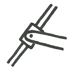

Connections and Supports (Planar Systems)
There are a variety of ways that bodies can be connected to or in contact with one another. Each type of connection will allow motion or rotation in some directions but it will constrain the bodies from rotating or moving in other directions. This page outlines some standard engineering connections and supports for planar systems (Systems approximated as two-dimensional systems).
For each connection type: a definition is given, an example is shown, the schematic representation is shown, and constraints the joints place on the body is shown.
| Connection Type | Example | Schematic |
Free Body Diagram with Contraints (Constraint forces in red, allowed motion in blue) |
# of Unknown Forces or Moments |
| Roller |
The wheels on objects such as shopping carts are examples of rollers.
|
|
Both of these connections result in a single unknown force. This force is always normal to the surface where the two objects meet. This connection type exerts no force parallel to the surface and no moment so the objects are free to slide and rotate relative to one another.
|
1 |
| Point Contact with Frictionless Surface |

Small points of contact between two smooth bodies, such as the table legs and the smooth floor shown here, can be approximated as point contact with a frictionless surface.
|
| ||
| Flexible Cable |

The chains holding this tire swing up are examples of flexible cable connections.
|
|
A cable can only exert a tensile force in the direction of the cable. A cable cannot "push" an object. It also cannot exert a force perpendicular to the direction of the cable and it cannot exert a moment on object.
|
|
| Collar on a Frictionless Rod | Example |

|
Both of these connection types allow only a force perpendicular to the rod or slot. There is no force exerted parallel to the rod or slot and there is no moment exerted between the two objects.
|
|
| Frictionless Pin in a Slot | Example |
|
||
| Pin Joint (Hinge) |

The hinge on this door is an example of a pin joint. It allows the door to rotate around this point, but it does not allow for translation.
|
|
Both of these connections allow for rotation but no motion either parallel or perpendicular to the surface. The pin joint constrains motion with normal forces, and the point contact with rough surfaces constrains motion with normal forces and friction forces.
|
2 |
| Point Contact on a Rough Surface |

The back support of this wheelbarrow is an example of point contact with a rough surface. The area of contact is fairly small, but friction between the ground and the support cannot be neglected.
|
|
||
| Area Contact on a Frictionless Surface |
The contact between this hockey puck and the ice is an example of area contact with a frictionless surface. The puck can slide, but it will remain on the surface and it cannot rotate.
|
|
Area contact with a frictionless surface exerts only a distributed normal force. The profile of this normal force however will change to prevent the body from rotating.
|
|
| Fixed Support |

This lamppost is anchored to the ground and is an example of a fixed support. The connection allows for no motion or rotation.
|

|
A fixed connection can exert forces both perpendicular to the connection and parallel to the connection which prevent motion and it can exert a moment to prevent rotation.
|
3 |
| Area Contact on a Rough Surface |
This crate has a large area of contact with the ground and the friction between the ground and the crate cannot be neglected.
|
|
Area contact with a rough surface exerts a distributed normal force that prevents motion perpendicular to the surface and prevents rotation like the frictionless area contact. Friction exerts a force parallel to surface that prevents sliding.
|
 |
| Author: Jacob Moore has liscenced this work under a Creative Commons Attribution-NonCommercial 3.0 Unported License. |